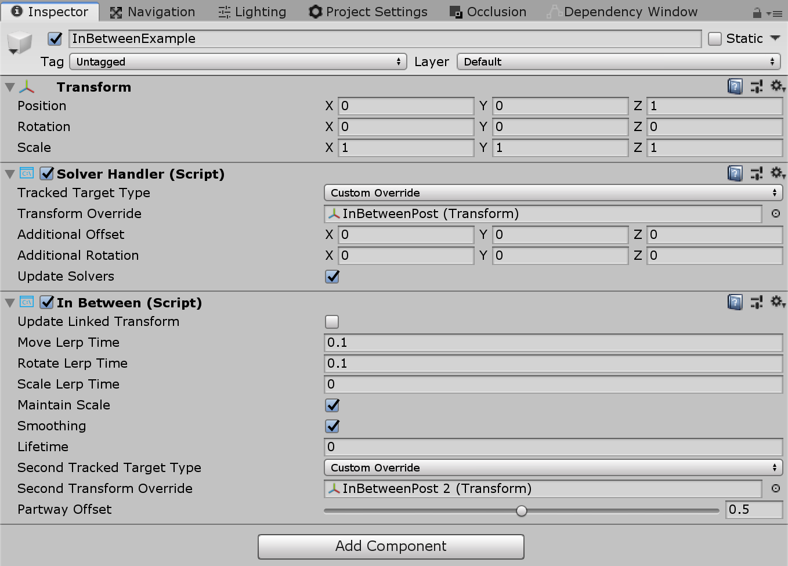

Solvers

Solvers are components that facilitate the means of calculating an object's position & orientation according to a predefine algorithm. An example may be placing an object on the surface the user's gaze raycast currently hits.
Furthermore, the Solver system deterministically defines an order of operations for these transform calculations as there is no reliable way to specify to Unity the update order for components.
Solvers offer a range of behaviors to attach objects to other objects or systems. One other example would be a tag-along object that hovers in front of the user (based on the camera). A solver could also be attached to a controller and an object to make the object tag-along the controller. All solvers can be safely stacked, for example a tag-along behavior + surface magnetism + momentum.
How to use a solver
The Solver system consists of three categories of scripts:
Solver: The base abstract class that all solvers derive from. It provides state tracking, smoothing parameters and implementation, automatic solver system integration, and update order.SolverHandler: Sets the reference object to track against (ex: the main camera transform, hand ray, etc.), handles gathering of solver components, and executes updating them in the proper order.
The third category is the solver itself. The following solvers provide the building blocks for basic behavior:
Orbital: Locks to a specified position and offset from the referenced object.ConstantViewSize: Scales to maintain a constant size relative to the view of the referenced object.RadialView: Keeps the object within a view cone cast by the referenced object.SurfaceMagnetism: casts rays to surfaces in the world, and align the object to that surface.Momentum: Applies acceleration/velocity/friction to simulate momentum and springiness for an object being moved by other solvers/components.InBetween: Keeps an object in between two tracked objects.HandConstraint: Constrains object to follow hands in a region that doesn't intersect the GameObject with the hands. Useful for hand constrained interactive content such as menus, etc. This solver is intended to work with IMixedRealityHand but also works with IMixedRealityController.HandConstraintPalmUp: Derives from HandConstraint but includes logic to test if the palm is facing the user before activation. This solver only works with IMixedRealityHand controllers, with other controller types this solver will behave just like its base class.
In order to use the Solver system, simply add one of the components listed above to a GameObject. Since all Solvers require a SolverHandler, one will be created automatically by Unity.
Note
Examples of how to use the Solvers system can be found in the SolverExamples.scene file.
How to change tracking reference
The Tracked Target Type property of the SolverHandler component defines the point of reference all solvers will use to calculate their algorithms. For example, a value type of Head with a simple SurfaceMagnetism component will result in a raycast from the head and in the direction of the user's gaze for solving what surface is hit. Potential values for the TrackedTargetType property are:
- Head : Point of reference from the camera
- MotionController: Point of reference from a motion controller
- Use the
TrackedHandednessproperty to select the handedness preference (i.e Left, Right, Both)
- Use the
- HandJoint: Point of reference from a hand
- Use the
TrackedHandednessproperty to select the handedness preference (i.e Left, Right, Both) - Use the
TrackedHandJointproperty to determine the joint transform to utilize
- Use the
- CustomOverride: Point of reference from the assigned
TransformOverride
Note
For both MotionController and HandJoint types, the solver handler will attempt to provide the left controller/hand transform first and then the right if the former is not available or unless the TrackedHandedness property specifies otherwise.

Example of various properties associated with each TrackedTargetType
How to chain Solvers
It is possible to add multiple Solver components to the same GameObject thus chaining their algorithms. The SolverHandler components handles updating all solvers on the same GameObject. By default the SolverHandler calls GetComponents<Solver>() on Start which will return the Solvers in the order that they appear in the inspector.
Furthermore, setting the Updated Linked Transform property to true will instruct that Solver to save it's calculated position, orientation, & scale to an intermediary variable accessible by all Solvers (i.e GoalPosition). When false, the Solver will update the GameObject's transform directly. By saving the transform properties to an intermediary location, other Solvers are able to perform their calculations starting from the intermediary variable. This is because Unity does not allow updates to gameObject.transform to stack within the same frame.
Note
Developers can modify the order of execution of Solvers by setting the SolverHandler.Solvers property directly.
How to create a new Solver
All solvers must inherit from the abstract base class, Solver. The primary requirements of a Solver extension involves overriding the SolverUpdate method. In this method, developers should update the inherited GoalPosition, GoalRotation and GoalScale properties to the desired values. Furthermore, it is generally valuable to leverage SolverHandler.TransformTarget as the frame of reference desired by the consumer.
The code provided below gives an example of a new Solver component called InFront that places the attached object 2m in front of the SolverHandler.TransformTarget. If the SolverHandler.TrackedTargetType is set by the consumer as Head, then the SolverHandler.TransformTarget will be the camera transform and thus this Solver will place the attached GameObject 2m in front of the users' gaze every frame.
/// <summary>
/// InFront solver positions an object 2m in front of the tracked transform target
/// </summary>
public class InFront : Solver
{
...
public override void SolverUpdate()
{
if (SolverHandler != null && SolverHandler.TransformTarget != null)
{
var target = SolverHandler.TransformTarget;
GoalPosition = target.position + target.forward * 2.0f;
}
}
}
Solver implementation guides
Common Solver properties
Every Solver component has a core-set of identical properties that control the core Solver behavior.
If Smoothing is enabled, then the Solver will gradually update the transform of the GameObject over time to the calculated values. The speed of this change is determined by every transform component's LerpTime property. For example, a higher MoveLerpTime value will result in slower increments in movement between frames.
If MaintainScale is enabled, then the Solver will utilize the GameObject's default local scale.

Common properties inherited by all Solver components
Orbital
The Orbital class is a tag-along component that behaves like planets in a solar system. This Solver will ensure the attached GameObject orbits around the tracked transform. Thus, if the Tracked Target Type of the SolverHandler is set to Head, then the GameObject will orbit around the user's head with a fixed offset applied.
Developers can modify this fixed offset to keep menus or other scene components at eye-level or at waist level etc. around a user. This is done by modifying the Local Offset and World Offset properties. The Orientation Type property determines the rotation applied to the object if it should maintain it's original rotation or always face the camera or face whatever transform is driving it's position etc.

Orbital example
RadialView
The RadialView is another tag-along component that keeps a particular portion of a GameObject within the frustum of the user's view.
The Min & Max View Degrees properties determines how large of a portion of the GameObject must always be in view.
The Min & Max Distance properties determines how far the GameObject should be kept from the user. For example, walking towards the GameObject with a Min Distance of 1m will push the GameObject away to ensure it is never closer than 1m to the user.
Generally, the RadialView is used in conjunction with Tracked Target Type set to Head so that the component follows the user's gaze. However, this component can function to be kept in "view" of any Tracked Target Type.

RadialView example
InBetween
The InBetween class will keep the attached GameObject between two transforms. These two transform endpoints are defined by the GameObject's own SolverHandler Tracked Target Type and the InBetween component's Second Tracked Target Type property. Generally, both types will be set to CustomOverride and the resulting SolverHandler.TransformOverride and InBetween.SecondTransformOverride values set to the two tracked endpoints.
At runtime, the InBetween component will create another SolverHandler component based on the Second Tracked Target Type and Second Transform Override properties.
The PartwayOffset defines where along the line between two transforms the object shall be placed with 0.5 as halfway, 1.0 at the first transform, and 0.0 at the second transform.

Example of using InBetween solver to keep object between two transforms
SurfaceMagnetism
The SurfaceMagnetism works by performing a raycast against a set LayerMask of surfaces and placing the GameObject at that point of contact.
The Surface Normal Offset will place the GameObject a set distance in meters away from the surface in the direction of the normal at the hit point on the surface.
Conversely, the Surface Ray Offset will place the GameObject a set distance in meters away from the surface but in the opposite direction of the raycast performed. Thus, if the raycast is the user's gaze, then the GameObject will move closer along the line from the hit point on the surface to the camera.
The Orientation Mode determines the type of rotation to apply in relation to the normal on the surface.
- None - No rotation applied
- TrackedTarget - Object will face the tracked transform driving the raycast
- SurfaceNormal - Object will align based on normal at hit point on surface
- Blended - Object will align based on normal at hit point on surface AND based on facing the tracked transform.
To force the associated GameObject to stay vertical in any mode other than None, enable Keep Orientation Vertical.
Note
Use the Orientation Blend property to control the balance between rotation factors when Orientation Mode is set to Blended. A value of 0.0 will have orientation entirely driven by TrackedTarget mode and a value of 1.0 will have orientation driven entirely by SurfaceNormal.

HandConstraint and HandConstraintPalmUp
The HandConstraint behavior provides a solver that constrains the tracked object to a region safe for hand constrained content (such as hand UI, menus, etc). Safe regions are considered areas that don't intersect with the hand. A derived class of HandConstraint called HandConstraintPalmUp is also included to demonstrate a common behavior of activating the solver tracked object when the palm is facing the user. For example use of this behavior please see the HandBasedMenuExample scene under: MixedRealityToolkit.Examples/Demos/HandTracking/Scenes/
Please see the tool tips available for each HandConstraint property for additional documentation. A few properties are defined in more detail below.

- Safe Zone: The safe zone specifies where on the hand to constrain content. It is recommended that content be placed on the Ulnar Side to avoid overlap with the hand and improved interaction quality. Safe zones are calculated by taking the hands orientation projected into a plane orthogonal to the camera's view and raycasting against a bounding box around the hands. Safe zones are defined to work with
IMixedRealityHandbut also works with other controller types. It is recommended to explore what each safe zone represents on different controller types.

Activation Events: Currently the
HandConstrainttriggers four activation events. These events can be used in many different combinations to create uniqueHandConstraintbehaviors, please see the HandBasedMenuExample scene under: MixedRealityToolkit.Examples/Demos/HandTracking/Scenes/ for examples of these behaviors.- OnHandActivate: triggers when a hand satisfies the IsHandActive method
- OnHandDeactivate: triggers when the IsHandActive method is no longer satisfied.
- OnFirstHandDetected: occurs when the hand tracking state changes from no hands in view, to the first hand in view.
- OnLastHandLost: occurs when the hand tracking state changes from at least one hand in view, to no hands in view.
Determining what surfaces can be hit
When adding a SurfaceMagnetism component to a GameObject, it is important to consider the layer of the GameObject and it's children, if any have colliders. The component works by performing various types of raycasts to determine what surface to "magnet" itself against. If the Solver GameObject has a collider on one of the layers listed in the MagneticSurfaces property of SurfaceMagnetism, then the raycast will likely hit itself resulting in the GameObject attaching to it's own collider point. This odd behavior can be avoided by setting the main GameObject and all children to the Ignore Raycast layer or modifying the MagneticSurfaces LayerMask array appropriately.
Conversely, a SurfaceMagnetism GameObject will not collide with surfaces on a layer not listed in the MagneticSurfaces property. It is generally recommended to place all desired surfaces on a dedicated layer (i.e Surfaces) and setting the MagneticSurfaces property to just this layer. Using default or everything may result in UI components or cursors contributing to the solver.
Finally, surfaces farther than the MaxRaycastDistance property setting will be ignored by the Surface Magnetism raycasts.